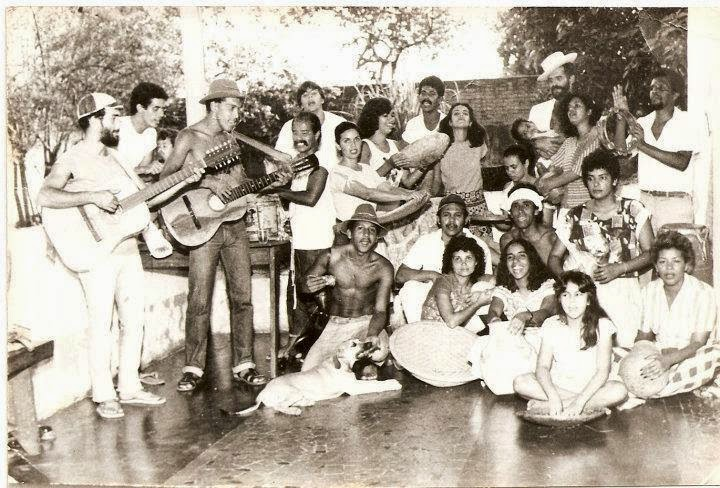

Grupo de Danças Parafolclóricas Zabelê
Em 03 de novembro de 1984, o Grupo Zabelê estreou em Pirapora com o espetáculo "Viva a Bahia". Desde sua fundação, o coletivo reassume diariamente o compromisso de exaltar a cultura brasileira, representando com respeito e reverência nossas danças e ritmos populares. Hoje, o grupo é composto por 20 dançarinos e 12 músicos.
Ao longo de seus 41 anos de existência, o Zabelê realizou profundas pesquisas sobre as expressões folclóricas nacionais, resultando em um repertório plural que abrange todas as regiões do país, incluindo ritmos como: pau-de-fitas, coco de roda alagoano, reis de bois, xaxado, moçambique, catira, ciranda, carimbó, siriá, lundu e São Gonçalo.
“Essa trajetória vitoriosa continua sendo construída graças à dedicação de uma de suas fundadoras e atual coordenadora, Mariângela Diniz, e ao amor de seus músicos e dançarinos pela cultura popular.”
Com o objetivo de promover a riqueza cultural do Brasil, o grupo já marcou presença em festivais nacionais e internacionais de folclore, além de festas populares e eventos em diversas cidades, como Belo Horizonte, Poços de Caldas, Brasília e Montes Claros.
Além dos palcos, o Zabelê participou de documentários, como o filme "Minas", e teve destaque na mídia nacional, com uma apresentação marcante no programa da Ana Maria Braga, na Rede Globo, em 2014.
{kind=link}

Foto destaque: Componentes em 1984
{kind=link}
{kind=link}
{kind=link}
{kind=link}
{kind=link}